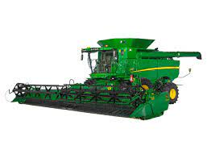
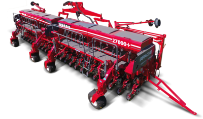
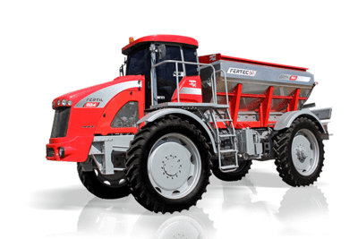

Cocecha
Las cosechadoras cuentan con monitores de control de rendimiento y humedad en forma instantánea cuyo ticket se emite una vez por día y debe coincidir con los totales registrados en cabecera, además monitores de rendimientos que realizan el mapeo georeferenciado de los lotes, información que es usada en la campaña siguiente para mejorar los métodos de fertilización y enmienda de los lotes.
Los equipos de cosecha cuentan con neumáticos de alta flotación y el tránsito de las tolvas se realiza solamente por cabeceras, y los rastrojos de cola de cosecha son esparcidos mediante adaptadores especiales para que genere una cobertura uniformemente distribuida.
Siembra
El sistema de producción adoptado es el de un 100 % en SIEMBRA DIRECTA sin laboreo, con uso intensivo de las tecnologías de agricultura de precisión. Se usan híbridos y variedades de genética reconocida y fiscalizadas, de empresas de primera línea en el sector semillero.
Para mejorar el control y el resultado, los tractores cuentan con piloto automático, ello evita la fatiga en los operadores, y mejora la calidad y prolijidad. Todas las sembradoras cuentan con sensores visibles y sonoros, para el control de las dosis de fertilizantes y densidad de semillas. Los parámetros de velocidad, profundidad, horarios, etc. son definidos por el operario y el supervisor Ing. Agrónomo, y plasmados en la orden de trabajo diariamente.
Pulverizacion

Para el caso de insumos agrícolas (insecticidas, herbicidas, fungicidas, fertilizantes, etc.), solamente se usan los inscriptos ante el SENASA, autorizados por las legislaciones vigentes y bajo las normas de aplicación y utilización, como la ley Nacional 27279 y las leyes provinciales que regulan la actividad.
Todos los productos se utilizan en la dosis mínima necesaria, y manejado por umbrales de toxicidad muy bajos. Los insecticidas se usan mayormente en las semillas, para evitar aplicaciones totales con el cultivo emergido. Todas las tareas y aplicaciones de agroquímicos se instruyen con una “orden de trabajo” firmada por Ing. Agrónomo matriculado, que es quien hace la supervisión técnica. También se adjunta la “Receta Agronómica”, según las leyes provinciales vigentes, y para cada tratamiento. El Ing. Agrónomo es quien hace las evaluaciones de calidad y resultado de la aplicación.
Fertilizacion
Se usan fertilizantes orgánicos, inorgánicos y enmiendas, (líquidos o sólidos) que permiten mantener un adecuado nivel nutricional tanto del suelo como de los cultivos, aumentando la fertilidad y/o la disponibilidad de nutrientes en los lotes. Por ello se usa el concepto “Nutrición del Suelo”, reponiendo mayor cantidad de nutrientes que la extracción en el mismo período. Por ende la calidad y potencialidad productiva de los lotes se aumenta de manera sostenida.
En todos los lotes se realizan análisis de suelos que permiten conocer el estado actual y proyectar las acciones más adecuadas para las fertilizaciones futuras. Estas acciones se repiten más de tres veces al año. “Los campos se tratan y se cuidan como si fueran propios, y por ello siempre se propone arrendamientos de largo plazo, que permiten ver en la realidad lo que se pregona”